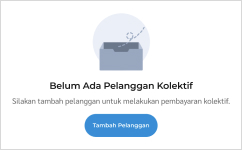
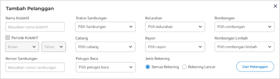
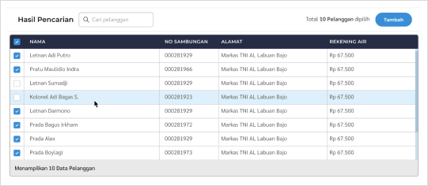
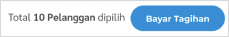

- Masuk ke menu "Tagihan" lalu pilih "Tagihan Kolektif" di sidebar menu kiri.
- Kemudian tekan tombol "Tambah Pelanggan"

- Anda bisa menggunakan 11 filter yang disediakan untuk mempercepat pencarian pelanggan. Tekan tombol "Cari Pelanggan" untuk memproses pencarian pelanggan.

- Seleksi pelanggan menggunakan checkbox. Pelanggan yang tidak dicentang tidak akan ditambahkan ke daftar pelanggan kolektif.
- Tekan tombol "Tambah" untuk proses selanjutnya.

- Jika ingin menambahkan pelanggan lagi, pilih menu "Tambah Pelanggan" di bagian atas.
- Langkah terakhir, setelah daftar kolektif sudah final, tekan "Bayar Tagihan" untuk proses selanjutnya.
